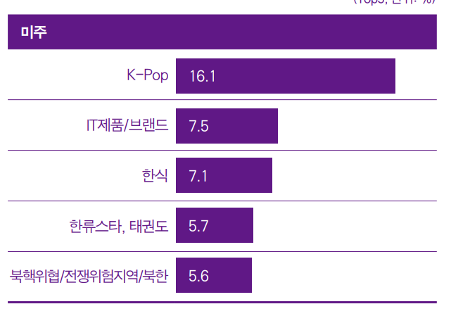
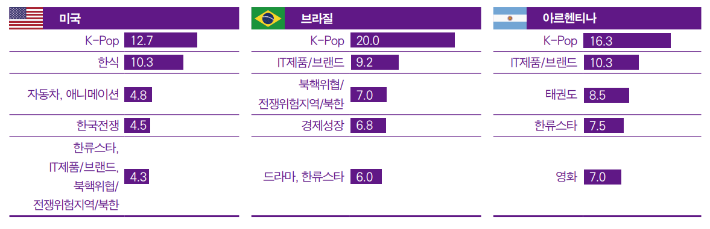

| 한국 연상 이미지 | 국가별 한류 순위 |
|---|---|
|  |  |
미주 역시 전년과 마찬가지로 ‘K-Pop’ 연상률이 가장 높았다. 국가별로 살펴보면, 미국은 ‘K-Pop’
응답률이 전년 조사 대비 2.5%p 감소했지만 ‘한식’에 내줬던 1위 자리를 탈환했다.
브라질 역시 전년보다 응답률이 7.2%p 감소하긴 했지만 여전히 높은 수치를 기록하며 ‘K-Pop’이 1위를 지켰다.
전년도부터 조사에 포함된 아르헨티나는 ‘K-Pop’이 16.3%의 응답률을 기록하며 2년 연속 1위를 기록했다.
한편 ‘IT제품/브랜드’와 ‘한류스타’는 3개국에서 모두 5위권 안에 포함되었다.
특히 브라질과 아르헨티나에서 ‘IT제품/브랜드’는 ‘K-Pop’에 이어 2위에 오르며 미주 전반에서 ‘IT제품/브랜드’의 인지도가 높은
수준임을 알 수 있었다
미주의 전체 문화콘텐츠 소비량 대비 한국 콘텐츠 소비량 비중은 23.88%로 비중이 가장 높은 장르
는 아시아·오세아니아와 마찬가지로 뷰티였다(28.36%). 이어 패션, 예능, 드라마, 웹툰, 영화 순으로 비중이 높은 것으로 조사됐고 전반적인 한국 문화콘텐츠 소비 비중이 다른 권역과 비교해 두 번째로 낮았다.
한편 미주 지역 응답자 역시 한국 영상, 음악콘텐츠를 주로 ‘온라인/모바일 플랫폼’을 통해 이용하고 있었다.
80% 내외의 응답자들이 한국 드라마, 예능, 영화, 음악, 애니메이션을 ‘온라인/모바일 플랫폼’을 통해 이용하고 있었으며, 그 다음으로 ‘TV’를 많이 이용하는 것으로 조사됐다.
특히 음악은 ‘온라인/모바일 플랫폼’을 통해 이용하는 소비자가 80% 이상이었다.
한국 패션, 뷰티, 음식은 ‘SNS상의 영상/사진’을 통해 접촉하는 비중이 가장 높았고 이어 ‘유튜브 등에 업로드 된 개인이 직접 만든 동영상’(뷰티, 음식)과 ‘한국 영상콘텐츠’(패션)를 창구로 이용하는 경우도 많았다.
게임은 ‘온라인/모바일 상에서 직접 플레이’하는 비중이 가장 높았고 출판물의 경우 ‘글로벌/자국사이트’를 통해 접촉하는 경우가 많았다.
미주는 전체 권역 중 유럽에 이어 두 번째로 낮은 한국 제품·서비스 향후 이용 의향을 보였지만
전년과 비교해선 3개국 모두 이용 의향이 증가했다.
한국 제품 중에서는 전반적으로 ‘식품’과 ‘노트북/태블릿PC’에 대한 구매 의향이 높았고 서비스의 경우엔 ‘한국 방문’과 ‘한국 음식점 식사’를 원하는 것으로 나타났다.
국가별로는 미국의 전반적 한국 제품·서비스 이용 의향이 전년 대비 약 15%p 급증했으며 특히 ‘한국 식품’과 ‘가전제품’에 대한 구매 욕구가 높았다.
브라질은 전년과 비교해 약 6%p 가량 이용 의향이 증가했고 ‘한국 식품’, ‘노트북/태블릿PC’, ‘휴대폰’에 대한 구매 욕구가 강한 것으로 조사됐다.
아르헨티나는 전년 대비 이용 의향이 약 4%p 증가했고 브라질과 유사한 양상을 보였다